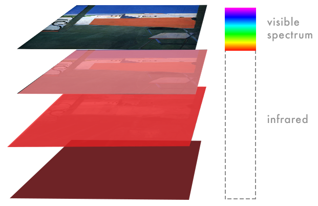
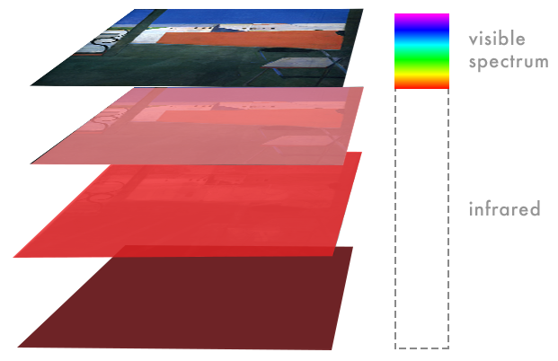

Infrared Reflectography
Infrared Reflectography provides a window into an artist’s process – details of which are normally hidden below the surface of a painting. Infrared Reflectography involves shining infrared light at a painting; the light reflected off the surface is then captured by a special camera. This camera, unlike typical digital cameras, is sensitive to infrared light.
 

Pentimento Layer
The term ‘pentimento’ describes adjustments an artist makes while painting, which move the composition toward its final state. Representing yet another shift in subject matter, this layer depicts the same studio environment as the final painting. Infrared analysis uncovers two particular modifications: removing the linear arrangement of floorboards and changing the orientation of the chair. In simplifying the foreground, the studio becomes a space of stillness, shifting the focus to the city view. Similarly, by turning the chair towards the window, Diebenkorn invites the viewer to focus on the world beyond the studio, creating an additional framing device. These revisions speak to Diebenkorn’s process, signaling a set of interventions into the desired aesthetic impact of the composition.